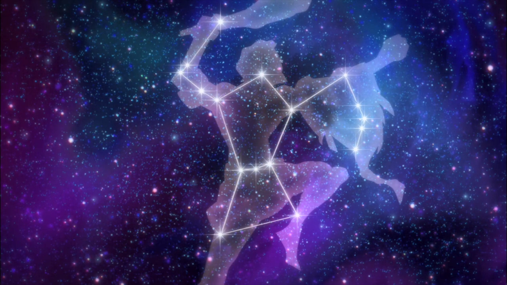
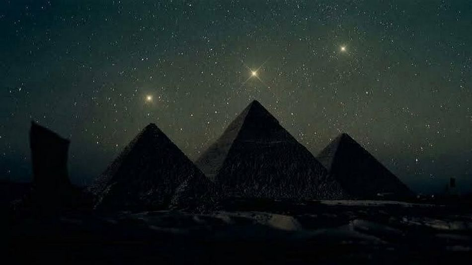

Constelação de Órion
Constelação de Órion, a meteorologia da antiguidade.
Últimos Artigos:
As Estrelas são corpos celestes que têm luz própria
Estrelas são grandes esferas de plasma, mantidas por sua própria gravidade. As estrelas emitem luz, calor e outros tipos de radiação em razão dos
Últimos Artigos:

As Estrelas são corpos celestes que têm luz própria
Estrelas são grandes esferas de plasma, mantidas por sua própria gravidade. As estrelas emitem luz, calor e outros tipos de radiação em razão dos
Imagem da constelação de órion.
A Constelação de Orion é uma das constelações mais importantes para a humanidade, sendo crucial no passado quando civilizações ancestrais a usavam como previsão meteorológica, uma vez que, obviamente, ainda não tinham sido inventados mecanismos modernos de fazer isso. Como exemplo, registros mostram que quando os povos do hemisfério norte avistavam a Constelação de Orion nascer ao amanhecer, era sinal de que o verão estava próximo. Seu nascimento no início da noite significava a chegada do inverno, e quando nascia à meia-noite anunciava a época da colheita de uvas.
A constelação está localizada ao lado da estrela mais brilhante do céu noturno terrestre – Sirius – e apresenta um total de 81 estrelas, sendo as mais famosas dentre elas as Três Marias. A estrela mais brilhante de Órion é também a sétima mais brilhante do céu, o nome dessa gigante é Rigel. Rigel está a cerca de 773 anos-luz da Terra, seu brilho é 40.000 maior que o do Sol e ela emite 100.000 vezes mais energia do que ele.
Posição das estrelas na figura de Órion
A posição das estrelas nas constelações sempre forma a figura do que é referenciado em seu nome, na de Orion não é diferente.
Como mostra a imagem acima, a constelação de Órion forma a figura do gigante caçador com um cinto (representado pelas Três Marias), segurando um escudo e com uma arma em seu braço direito erguido.
Rotação
Curiosamente, os movimentos de rotação de Saturno são menores do que o habitual, colocando em base seriam por volta de 10 horas, sendo algo difícil de determinar já que a concentração altíssima de nuvens de hidrogênio dificulta a visualização clara de Saturno.
Constelação de Órion e as Pirâmides
Existe uma teoria de que as pirâmides de Gizé imitam o cinto de Orion. A falta de simetria nas 3 pirâmides, assim como nas 3 estrelas do cinturão da Constelação de Orion mostra que não se trata de um erro de cálculo e sim que foram construídas propositalmente deste modo.
Além de que a orientação dessas pirâmides é direcionada para o Rio Nilo, assim como a orientação da constelação está voltada para a Via-Láctea. Muitos outros monumentos ancestrais da humanidade têm relação com o espaço e suas constelações, como a cidade de Teotihuacan, no México, cujos monumentos também estão direcionados em direção à constelação de Órion.
Artigos relacionados

Sistema Solar
Das temperaturas escaldantes de Vênus até o maior vulcão do Sistema Solar em Marte: é hora de conhecer a [...]!

Marte
Das temperaturas escaldantes de Vênus até o maior vulcão do Sistema Solar em Marte: é hora de conhecer a [...]!

Urano
Das temperaturas escaldantes de Vênus até o maior vulcão do Sistema Solar em Marte: é hora de conhecer a [...]!
Jupiter
Das temperaturas escaldantes de Vênus até o maior vulcão do Sistema Solar em Marte: é hora de conhecer a [...]!
Plutão
Das temperaturas escaldantes de Vênus até o maior vulcão do Sistema Solar em Marte: é hora de conhecer a [...]!